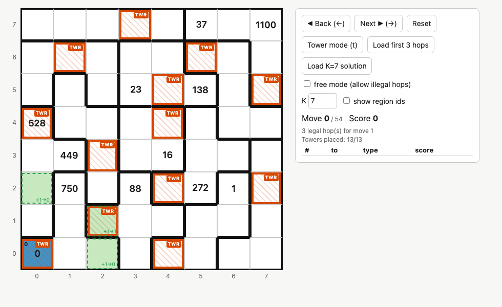

Knight Moves 7
Solving Jane Street's July 2026 puzzle, where the knight can climb.
The puzzle

The 8x8 board is split into the 12 pentominoes plus one 2x2 square, so 13 regions. Each region gets a tower: one extra cube on one of its squares. A knight starts bottom-left and keeps moving until it has visited every tower, never landing on the same square twice.
The score starts at 0. On move N:
- same height: +N
- moving up: ×N
- moving down: ÷N, and only if it divides evenly
The knight wrote its score down every 3 moves through move 18, then every K moves for some unknown K. Those are the numbers on the board. Rebuild the path, and the answer comes from summing scores next to the squares it never visited.
Three things are unknown at once: where the towers are, what K is, and which move each number belongs to.
My Solution Process
Work Method
I used claude code to implement the my ideas into python functions, but gave it my thoughts in a log.md file. It then would write what I wanted to test and then ran functions based off my instructions. The important realizations I wrote down are as follows.
Bounding the unknowns
There are 11 written scores (the 0 on the start square doesn't count). Six of them are moves 3, 6, …, 18, so five come after move 18, at 18+K up to 18+5K. The answer needs unvisited squares, so the path is at most 62 moves, which means 18 + 5K ≤ 62 and K is between 4 and 8.
I also looked for relationships between the numbers: 23, 37 and 449 are prime, 88 divides 528, 23 divides 138. None of it ended up mattering much: once the search was running, the exact score matches did that work on their own.
The forced opening
The first three moves can't score more than 0+1+2 = 3, then ×3 = 9, and the only number that small is the 1 at (6,2). Getting 1 on move 3 means dividing 3 by 3, so the score after two moves was 3, which means two level moves: 0+1+2. Working backwards, (0,0), (2,1) and (4,2) all have to be towers. The opening is completely forced.
I kept going three moves at a time:
- moves 4–6: three routes, all landing on 16 at (4,3)
- moves 7–9: forced again: up ×7 = 112, down ÷8 = 14, level +9 = 23
- moves 10–12: up onto (0,4) for ×12 = 528
- moves 13–18: 37, then 88
By move 18 there were 105 possible states. All of them end at (3,2) with a score of 88, and they share every tower except one. The only differences are which "filler" squares got used in between.
Placing towers lazily
Trying every tower layout up front is inefficient: 5¹² × 4 combinations. The trick is that the knight has to visit every tower, so a tower always sits on a square the path lands on. That means towers can be decided at the moment the knight lands: if the region has no tower yet, branch on "tower here" or "not here".
Two maps keep track of it:
towers[(x, y)] = tower_id # which region each square belongs to
tower_location[tower_id] = (x, y) # filled in as towers get placedTwo cheap checks cut the search down a lot:
- a region whose squares are all visited without a tower is a dead end
- the knight stops the moment it reaches the 13th tower, so getting there before the last written score is a dead end
Brute forcing K
With K fixed, every move after 18 is constrained too: the knight lands on a numbered square exactly at moves 18+K, 18+2K, … and the score has to match. So I ran a depth-first search from the 105 states for each K:
| K | solutions | positions searched | time |
|---|---|---|---|
| 4 | 0 | 9k | 0.1s |
| 5 | 0 | 24k | 0.2s |
| 6 | 0 | 58k | 0.5s |
| 7 | 1 | 696k | 4.7s |
| 8 | 0 | 311k | 2.7s |
One solution in total. The knight hits 138, 272, 449, 750 and 1100 at moves 25, 32, 39, 46 and 53, reaches the last tower on move 54, and leaves 9 squares unvisited.
A visualizer
Reading paths as lists of coordinates gets old fast, so I built a small browser page: click a highlighted square to hop there (it previews the score), place towers by hand, undo, and step through the solution with the arrow keys. Squares where the knight wrote a score show it in grey, next to the numbers printed on the board.

Checking the answer
The answer is the sum, over every unvisited square, of the scores on its up/down/left/right neighbors: 33609. That matched the official solution, and so did the path, every tower, and every intermediate score.
What I'd do differently
Going three moves at a time was great for understanding why the opening is forced. It wasn't needed for speed, though: one depth-first search from move 0 finds the same answer for K = 7 in the same 4.7 seconds (about 8 seconds for all five values of K), because matching the score every three moves throws out almost everything early.
The things that actually mattered were:
- reading the move rule properly, with height as the third dimension
- placing towers when the knight lands instead of guessing them up front
- treating every written score as an exact match on a specific move
Code, notes and the visualizer are on GitHub. The puzzle is here and the official solution here.
More writeups
- PocketLens — Self hosted personal finance app.
- flightwatch — Python automation to hunt cheap flights to Europe.
- Weather trading system — Builds its own temperature forecast, prices every Kalshi band off it, and trades the gap.
- Wordle solver — My attempt at solving the game.
- LLM distillation feature store — Cache the expensive model's answers once, train a cheap model on them forever.
- NFL Big Data Bowl — Two metrics for tackling — one for the chase, one for the finish.